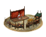
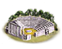
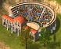
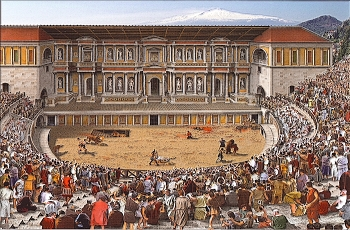
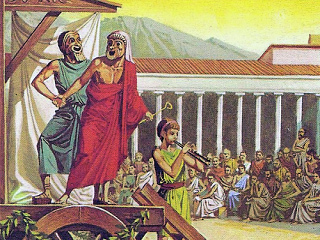
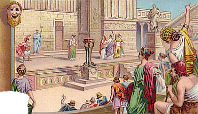
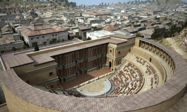

Imperium
Imperium Town Theatre (Leisure) chain
4 levels, each replacing the one before it — you upgrade in place rather than building alongside.
Town Theatre (Leisure) → Odeon (Leisure) → Theatre (Leisure) → Great Theatre (Leisure)
Pictures are the game's own building art. Where a culture ships none of its own, the game falls back to another culture's, and that is what is shown here.
Levels at a glance
| Level | Cost | Build time | Minimum settlement | Upgrades to | Level | Cost | Build time | Minimum settlement | Upgrades to | ||
|---|---|---|---|---|---|---|---|---|---|---|---|
 | Town Theatre (Leisure) | 2,000 | 2 | large town | Odeon (Leisure) |  | Odeon (Leisure) | 4,000 | 4 | city | Theatre (Leisure) |
 | Theatre (Leisure) | 6,000 | 5 | large city | Great Theatre (Leisure) | Great Theatre (Leisure) | 9,000 | 7 | huge city | — |
Costs in denarii, build time in turns.
Theatre (Leisure)

Greek drama is greece's top export.
The Greeks have admittedly brought the world many things, not least of which is the drama and the Theatre. Roman engineers have perfected the original design though and we build these imposing structures without needing to lean on existing geography, where hills are lacking Romans simply build upwards to create the perfect viewing and listening experience.
Wording varies by culture: 7 versions of this description exist in the game files.
| Cost | 6,000 denarii | Build time | 5 turns | Minimum settlement | large city |
| Upgrades to | Great Theatre (Leisure) |
What it does
- taxable income -12 to -8, scaling with settlement size (player only)
Show 12 effects that apply only in the circumstances shown
- +4 public order (happiness) — only when
not factions { greek, w_hellenistic, e_hellenistic, roman, indian, anatolian, eastern, carthaginian, } - +6 public order (happiness) — only when
factions { greek, w_hellenistic, e_hellenistic, roman, indian, anatolian, eastern, carthaginian, } - -8 taxable income — only when
size1 and building_present_min_level theatres theatre and not is_player - -8 taxable income — only when
size2 and building_present_min_level theatres theatre and not is_player - -9 taxable income — only when
size3 and building_present_min_level theatres theatre and not is_player - -9 taxable income — only when
size4 and building_present_min_level theatres theatre and not is_player - -10 taxable income — only when
size5 and building_present_min_level theatres theatre and not is_player - -10 taxable income — only when
size6 and building_present_min_level theatres theatre and not is_player - -11 taxable income — only when
size7 and building_present_min_level theatres theatre and not is_player - -11 taxable income — only when
size8 and building_present_min_level theatres theatre and not is_player - -12 taxable income — only when
size9 and building_present_min_level theatres theatre and not is_player - -12 taxable income — only when
size10 and building_present_min_level theatres theatre and not is_player
Religious belief — spreads 42 beliefs, by how much depending on what the region already believes.
Show the 42 beliefs
- Aeolian +7
- Arab +5
- Arcadian +7
- Armenian +7
- Assyrian +7
- Baltic +5
- Bithynian +5
- Bosporan +7
- Cappadocian +7
- Carian +7
- Caucasian +7
- Celtic +5
- Cilician +7
- Dardanian +5
- delmato_pannonian (no name in the text files) +5
- Dorian +7
- Egyptian +5
- Epirote +7
- Ethiopian +5
- Germanic +5
- Greco-Bactrian +7
- Iberian +5
- Illyrian +5
- Indian +7
- Ionian +7
- Iranian +7
- Italic +7
- Judaean +7
- Liburnian +5
- Libyan +5
- Lycian +7
- Macedonian +7
- Mesopotamian +7
- Northwest Greek +7
- Paeonian +5
- Paphlagonian +7
- Phoenician +7
- Pisidian +7
- Scythian +5
- Thracian +5
- Triballian +5
- Venetic +5
Town Theatre (Leisure)

A town theatre is a wooden structure used for plays.
A town theatre is a somewhat crude wooden structure used for all the drama and comedy that the Greek and Roman cultures have to offer. One will not find the best artists on this stage, but they will surely provide the audience with a moment of entertainment.
Wording varies by culture: 10 versions of this description exist in the game files.
| Cost | 2,000 denarii | Build time | 2 turns | Minimum settlement | large town |
| Upgrades to | Odeon (Leisure) |
What it does
- +2 public order (happiness)
- taxable income -6 to -2, scaling with settlement size (player only)
Show 10 effects that apply only in the circumstances shown
- -2 taxable income — only when
size1 and building_present_min_level theatres town_theatre and not is_player - -2 taxable income — only when
size2 and building_present_min_level theatres town_theatre and not is_player - -3 taxable income — only when
size3 and building_present_min_level theatres town_theatre and not is_player - -3 taxable income — only when
size4 and building_present_min_level theatres town_theatre and not is_player - -4 taxable income — only when
size5 and building_present_min_level theatres town_theatre and not is_player - -4 taxable income — only when
size6 and building_present_min_level theatres town_theatre and not is_player - -5 taxable income — only when
size7 and building_present_min_level theatres town_theatre and not is_player - -5 taxable income — only when
size8 and building_present_min_level theatres town_theatre and not is_player - -6 taxable income — only when
size9 and building_present_min_level theatres town_theatre and not is_player - -6 taxable income — only when
size10 and building_present_min_level theatres town_theatre and not is_player
Religious belief — spreads 42 beliefs, by how much depending on what the region already believes.
Show the 42 beliefs
- Aeolian +2
- Arab +2
- Arcadian +2
- Armenian +2
- Assyrian +2
- Baltic +2
- Bithynian +2
- Bosporan +2
- Cappadocian +2
- Carian +2
- Caucasian +2
- Celtic +2
- Cilician +2
- Dardanian +2
- delmato_pannonian (no name in the text files) +2
- Dorian +2
- Egyptian +2
- Epirote +2
- Ethiopian +2
- Germanic +2
- Greco-Bactrian +2
- Iberian +2
- Illyrian +2
- Indian +2
- Ionian +2
- Iranian +2
- Italic +2
- Judaean +2
- Liburnian +2
- Libyan +2
- Lycian +2
- Macedonian +2
- Mesopotamian +2
- Northwest Greek +2
- Paeonian +2
- Paphlagonian +2
- Phoenician +2
- Pisidian +2
- Scythian +2
- Thracian +2
- Triballian +2
- Venetic +2
Odeon (Leisure)

A small platform and adequate seating set the stage.
This theatrical space is cleverly designed so that a poet's words can carry to the whole audience, bringing them happiness, moving emotions and enriched lives. The Greeks have much to be proud of with their rich cultural heritage, and the Romans are more than happy to partake in the entertainments they developed. The Odeum makes sure that this Greek tradition lives on in a new Roman era.
Drama contests draw works from some of the finest playwrights in the world, and confer great prestige on the cities where they are held.
Wording varies by culture: 11 versions of this description exist in the game files.
| Cost | 4,000 denarii | Build time | 4 turns | Minimum settlement | city |
| Upgrades to | Theatre (Leisure) |
What it does
- +4 public order (happiness)
- taxable income -8 to -4, scaling with settlement size (player only)
Show 10 effects that apply only in the circumstances shown
- -4 taxable income — only when
size1 and building_present_min_level theatres lyceum and not is_player - -4 taxable income — only when
size2 and building_present_min_level theatres lyceum and not is_player - -5 taxable income — only when
size3 and building_present_min_level theatres lyceum and not is_player - -5 taxable income — only when
size4 and building_present_min_level theatres lyceum and not is_player - -6 taxable income — only when
size5 and building_present_min_level theatres lyceum and not is_player - -6 taxable income — only when
size6 and building_present_min_level theatres lyceum and not is_player - -7 taxable income — only when
size7 and building_present_min_level theatres lyceum and not is_player - -7 taxable income — only when
size8 and building_present_min_level theatres lyceum and not is_player - -8 taxable income — only when
size9 and building_present_min_level theatres lyceum and not is_player - -8 taxable income — only when
size10 and building_present_min_level theatres lyceum and not is_player
Religious belief — spreads 42 beliefs, by how much depending on what the region already believes.
Show the 42 beliefs
- Aeolian +5
- Arab +5
- Arcadian +5
- Armenian +5
- Assyrian +5
- Baltic +5
- Bithynian +5
- Bosporan +5
- Cappadocian +5
- Carian +5
- Caucasian +5
- Celtic +5
- Cilician +5
- Dardanian +5
- delmato_pannonian (no name in the text files) +5
- Dorian +5
- Egyptian +5
- Epirote +5
- Ethiopian +5
- Germanic +5
- Greco-Bactrian +5
- Iberian +5
- Illyrian +5
- Indian +5
- Ionian +5
- Iranian +5
- Italic +5
- Judaean +5
- Liburnian +5
- Libyan +5
- Lycian +5
- Macedonian +5
- Mesopotamian +5
- Northwest Greek +5
- Paeonian +5
- Paphlagonian +5
- Phoenician +5
- Pisidian +5
- Scythian +5
- Thracian +5
- Triballian +5
- Venetic +5
Great Theatre (Leisure)

Greek wit and drama, enhanced by Roman sensibilty, are performed here to an adoring crowd.
The artform of drama and music have long since stopped to be the sole province of the Greeks now that Rome has take over the torch of driving back barbarism. What use is building an empire if it does not also shine with a glorious cultural life. This massive Theatre stretches high above the city streets as a marvel to any yet unfamiliar with what our people can do, and to build one for the people is an excellent way for the most powerfull patricians to have their names forever tied to the eternal city.
Wording varies by culture: 4 versions of this description exist in the game files.
| Cost | 9,000 denarii | Build time | 7 turns | Minimum settlement | huge city |
What it does
- taxable income -13 to -9, scaling with settlement size (player only)
Show 12 effects that apply only in the circumstances shown
- +4 public order (happiness) — only when
not factions { greek, w_hellenistic, e_hellenistic, roman, indian, } - +7 public order (happiness) — only when
factions { greek, w_hellenistic, e_hellenistic, roman, indian, } - -9 taxable income — only when
size1 and building_present_min_level theatres theatre and not is_player - -9 taxable income — only when
size2 and building_present_min_level theatres theatre and not is_player - -10 taxable income — only when
size3 and building_present_min_level theatres theatre and not is_player - -10 taxable income — only when
size4 and building_present_min_level theatres theatre and not is_player - -11 taxable income — only when
size5 and building_present_min_level theatres theatre and not is_player - -11 taxable income — only when
size6 and building_present_min_level theatres theatre and not is_player - -12 taxable income — only when
size7 and building_present_min_level theatres theatre and not is_player - -12 taxable income — only when
size8 and building_present_min_level theatres theatre and not is_player - -13 taxable income — only when
size9 and building_present_min_level theatres theatre and not is_player - -13 taxable income — only when
size10 and building_present_min_level theatres theatre and not is_player
Religious belief — spreads 42 beliefs, by how much depending on what the region already believes.
Show the 42 beliefs
- Aeolian +9
- Arab +5
- Arcadian +9
- Armenian +9
- Assyrian +7
- Baltic +5
- Bithynian +5
- Bosporan +9
- Cappadocian +7
- Carian +7
- Caucasian +7
- Celtic +5
- Cilician +7
- Dardanian +5
- delmato_pannonian (no name in the text files) +5
- Dorian +9
- Egyptian +5
- Epirote +9
- Ethiopian +5
- Germanic +5
- Greco-Bactrian +9
- Iberian +5
- Illyrian +5
- Indian +9
- Ionian +9
- Iranian +7
- Italic +9
- Judaean +7
- Liburnian +5
- Libyan +5
- Lycian +7
- Macedonian +9
- Mesopotamian +7
- Northwest Greek +9
- Paeonian +5
- Paphlagonian +7
- Phoenician +7
- Pisidian +7
- Scythian +5
- Thracian +5
- Triballian +5
- Venetic +5
What the shorthands in those conditions stand for (10)
These are the mod's own, quoted from the game files unchanged.
| Shorthand | Stands for | Shorthand | Stands for | Shorthand | Stands for |
|---|---|---|---|---|---|
size1 | major_event "empire_size1" | size10 | major_event "empire_size10" | size2 | major_event "empire_size2" |
size3 | major_event "empire_size3" | size4 | major_event "empire_size4" | size5 | major_event "empire_size5" |
size6 | major_event "empire_size6" | size7 | major_event "empire_size7" | size8 | major_event "empire_size8" |
size9 | major_event "empire_size9" |